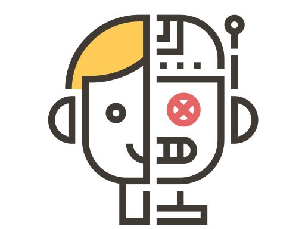

<ion-menu [content]="content" type="push">
  <ion-header>
    <ion-toolbar color="primaryLightColor">
      <ion-title>Menú</ion-title>
    </ion-toolbar>
  </ion-header>

  <ion-content >
    
    <ion-list color="secondaryLightColor">
      <button menuClose ion-item icon-end *ngFor="let p of pages" (click)="openPage(p)">
        <ion-icon name="{{p.icon}}" style="color: #4bacb8"></ion-icon>
        {{p.title}}
      </button>
    </ion-list>
  </ion-content>

</ion-menu>

<!-- Disable swipe-to-go-back because it's poor UX to combine STGB with side menus -->
<ion-nav [root]="rootPage" #content swipeBackEnabled="false"></ion-nav>